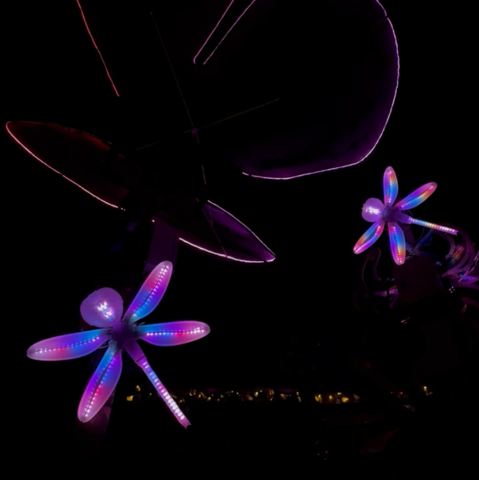
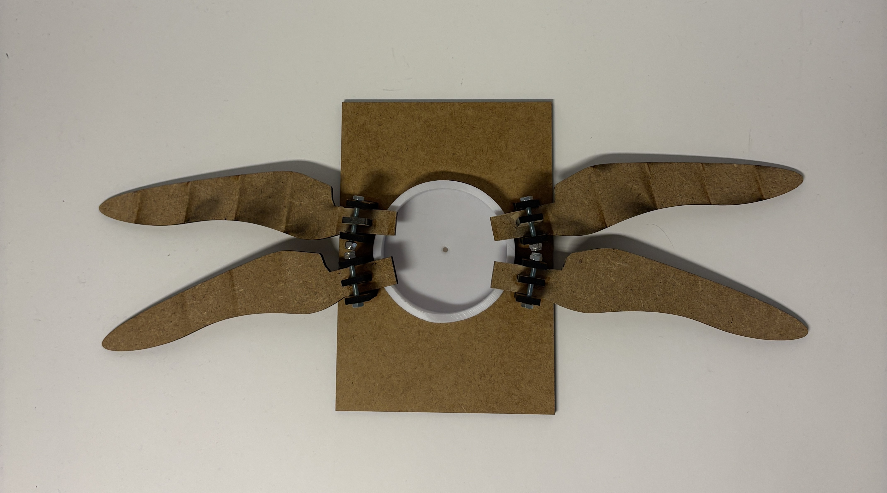
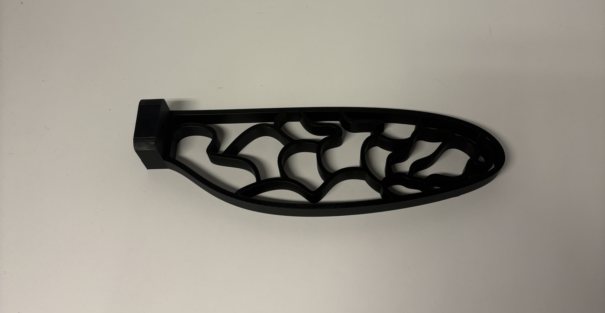
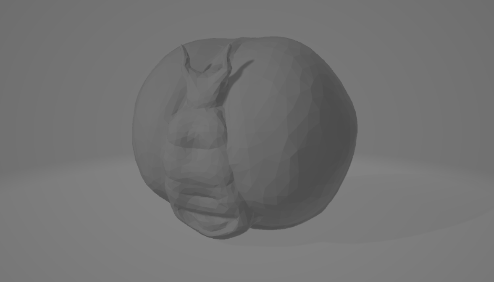
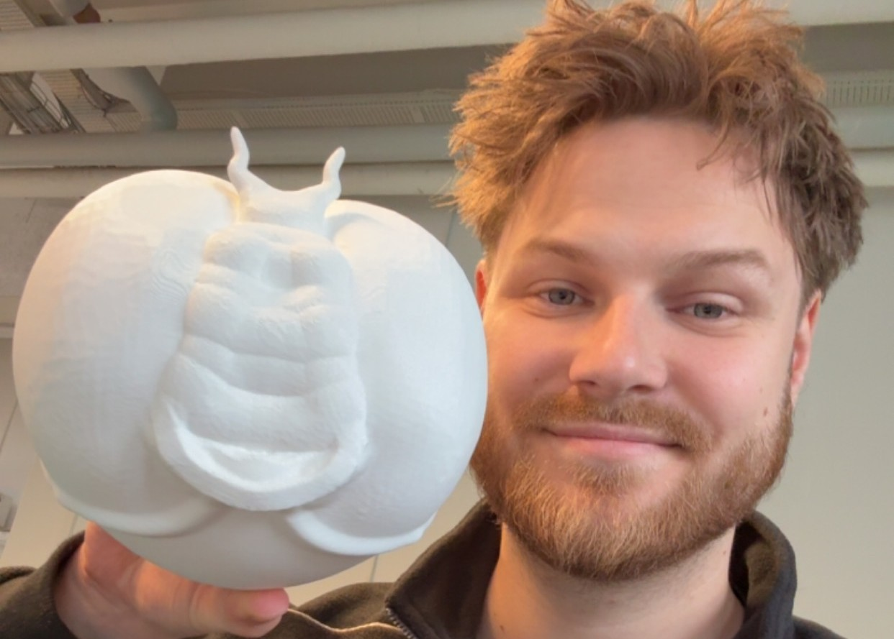
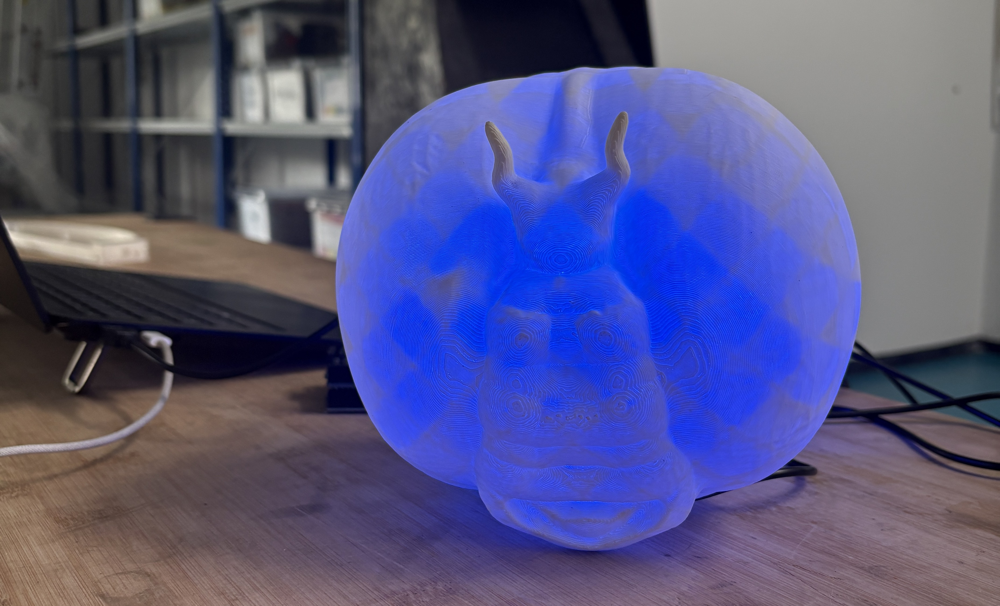

Roskilde Festival · 2026
Guldsmeden · Fremtidens Skove
En mekanisk og interaktiv lys-installation formet som en gigantisk guldsmed. Værket sætter fokus på natur, biodiversitet og teknologi i samspil med festivalens område.
Processen
Fra prototype til færdigt værk
FASE 1 · DIREKTE PROTOTYPE-ARBEJDE
Hands-on Byggefase uden skitser
Projektet sprang papirskitserne over og gik direkte til det fysiske arbejde. Der blev eksperimenteret direkte på materialerne for at teste guldsmedens vingefang og vægtfordeling.



FASE 2 · ELEKTRONIK & MEKANIK
Motor- & Lys-test
Montering af servomotorer og LED-strips. Slideren herunder viser de mekaniske bevægelser og lyssekvenserne i aktion.
FASE 3 · 3D DESIGN AF GULDSMED
3D-Modellering & digitale tilpasninger
Udviklingen af de digitale 3D-komponenter til udskæring og montering af skelettet.



FASE 4 · DET FÆRDIGE RESULTAT PÅ FESTIVAL
Opstilling i Fremtidens Skove
Den endelige installation svævende i skoven på Roskilde Festival 2026.
Teknikken
Arduino Kildekode
guldsmed_styring.ino
// Indsæt din Arduino-kode til Guldsmeden herunder:
#include
#include
#define BRIGHTNESS 100
#define SERVO_PIN 12
#define WING_LEDS 31
#define TAIL_LEDS 37
#define HEAD_LEDS 31
CRGB leds1[WING_LEDS], leds2[WING_LEDS], leds3[WING_LEDS], leds4[WING_LEDS];
CRGB leds5[TAIL_LEDS], leds6[HEAD_LEDS];
Servo servo;
int pos = 0;
int dir = 1;
CRGBPalette16 colors(
CRGB::Pink, CRGB::DeepPink, CRGB::Purple, CRGB::Blue,
CRGB::Blue, CRGB::DeepSkyBlue, CRGB::Orange, CRGB::DarkRed,
CRGB::Pink, CRGB::DeepPink, CRGB::Purple, CRGB::Blue,
CRGB::Blue, CRGB::DarkRed, CRGB::HotPink, CRGB::LightPink
);
void setup() {
FastLED.addLeds(leds1, WING_LEDS);
FastLED.addLeds(leds2, WING_LEDS);
FastLED.addLeds(leds3, WING_LEDS);
FastLED.addLeds(leds4, WING_LEDS);
FastLED.addLeds(leds5, TAIL_LEDS);
FastLED.addLeds(leds6, HEAD_LEDS);
FastLED.setBrightness(BRIGHTNESS);
servo.attach(SERVO_PIN);
}
void loop() {
fillStrip(leds1, WING_LEDS);
fillStrip(leds2, WING_LEDS);
fillStrip(leds3, WING_LEDS);
fillStrip(leds4, WING_LEDS);
fillStrip(leds5, TAIL_LEDS);
fillStrip(leds6, HEAD_LEDS);
FastLED.show();
servo.write(pos);
pos += dir;
if (pos >= 180 || pos <= 0) {
dir = -dir;
}
delay(15);
}
void fillStrip(CRGB strip[], int amount) {
for (int i = 0; i < amount; i++) {
strip[i] = ColorFromPalette(colors, millis() / 20 + i * 6);
}
}
}